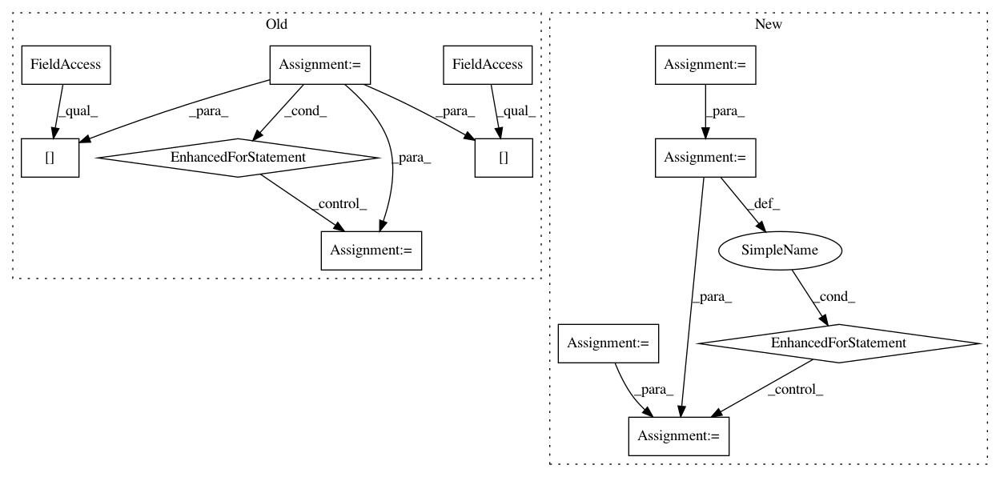

f8d9a6c144ef84bad2478a4ba4eedb1c559274e0,skimage/_shared/coord.py,,ensure_spacing,#,5
Before Change
indices = tree.query_ball_point(coord, r=spacing, p=p_norm)
rejected_peaks_indices = set()
for idx, candidates in enumerate(indices):
if idx not in rejected_peaks_indices:
// keep current point and the points at exactly spacing from it
candidates.remove(idx)
dist = distance.cdist([coord[idx]],
coord[candidates],
distance.minkowski,
p=p_norm).reshape(-1)
candidates = [c for c, d in zip(candidates, dist)
if d < spacing]
// candidates.remove(keep)
rejected_peaks_indices.update(candidates)
// Remove the peaks that are too close to each other
output = np.delete(coord, tuple(rejected_peaks_indices), axis=0)
return output
After Change
coords = np.atleast_2d(coords)
if batch_size is None:
batch_list = [coords]
else:
batch_list = np.array_split(coords, batch_size)
output = np.zeros((0, coords.shape[1]))
for batch in batch_list:
output = _ensure_spacing(np.vstack([output, batch]),
spacing, p_norm)
return output
In pattern: SUPERPATTERN
Frequency: 3
Non-data size: 12
Instances
Project Name: scikit-image/scikit-image
Commit Name: f8d9a6c144ef84bad2478a4ba4eedb1c559274e0
Time: 2020-11-11
Author: rfezzani@gmail.com
File Name: skimage/_shared/coord.py
Class Name:
Method Name: ensure_spacing
Project Name: Coder-Yu/RecQ
Commit Name: eb9b33646872a2565dae65b17e9cb908e886386a
Time: 2016-11-12
Author: 156698920@qq.com
File Name: algorithm/rating/SlopeOne.py
Class Name: SlopeOne
Method Name: predict
Project Name: nilmtk/nilmtk
Commit Name: 9ce99b87ced85d30b755c4bf8e94b1d592b963bd
Time: 2014-07-10
Author: jack-list@xlk.org.uk
File Name: nilmtk/metrics.py
Class Name:
Method Name: rms_error_power